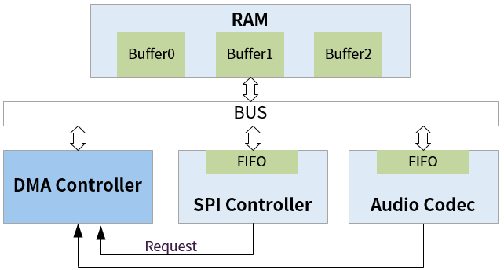

4.2.1. 模块介绍¶
4.2.1.1. 术语定义¶
术语 |
定义 |
注释说明 |
|---|---|---|
DMA |
Direct Memory Access |
直接存储器访问 |
DRQ |
DMA Request |
指DMA请求的端口号 |
4.2.1.2. 模块简介¶
DMA 模块允许总线上的不同设备间的数据自动直接传输，最大优点是可减少CPU负载，并且具有高带宽、低延迟的特性。
DMA 模块的功能特性：
支持多达8个DMA通道，每通道有32个源端和32个终端可选
采用链表配置方式，寄存器描述通道状态
设备位宽支持8/16/32/64位，Burst长度支持1/4/8/16个
DMA 源端、终端地址 8Byte 对齐
支持 memset 操作（D21x使用的 DMA V1.0 不支持此功能）

图 4.16 DMA 硬件的原理框图¶
从上图中可以看出，根据数据的源、目的可以将DMA操作分为以下3种情况：
内核中类型定义 |
含义 |
|
|---|---|---|
1 |
DMA_MEM_TO_MEM |
从内存到内存（包括DRAM、SRAM），可看作memcpy()的硬件加速 |
2 |
DMA_MEM_TO_DEV |
从内存到设备，支持DMA操作的设备一般需要提供握手信号、FIFO |
3 |
DMA_DEV_TO_MEM |
从设备到内存，是情况2的逆操作 |
4 |
DMA_DEV_TO_DEV |
从设备到设备，这种比较少用 |
注解
USB、GMAC、eMMC等模块都有自己内置的DMA，为了区分开，所以有时候也将本 模块称作 “通用 DMA” 模块。